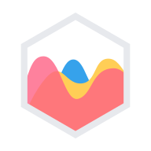
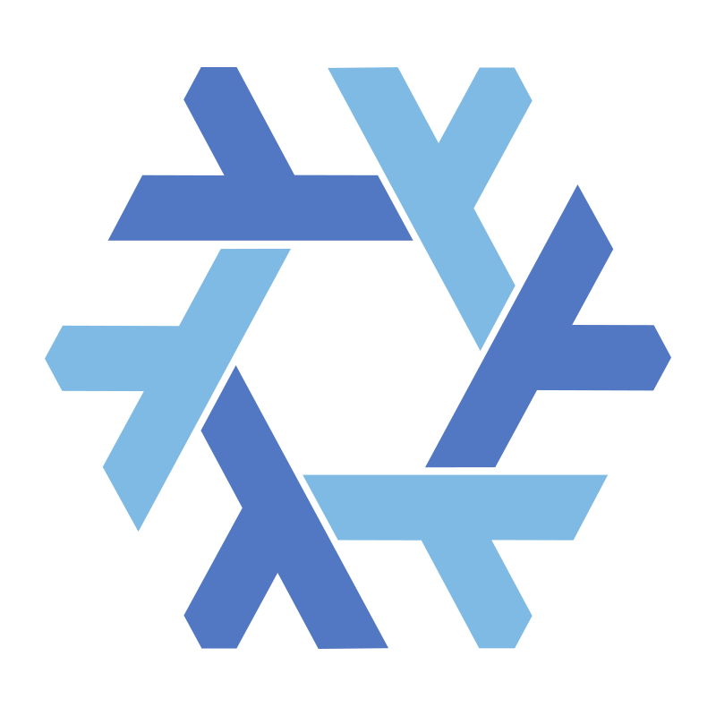

TecnologieTechnologies
Stack TecnologicoTechnology Stack
Ecosistema moderno TypeScript-first, dal frontend al deploy.Modern TypeScript-first ecosystem, from frontend to deployment.
⚛️ Frontend

React 18
Componenti funzionali, hooks, concurrent modeFunctional components, hooks, concurrent mode
Next.js 14
App Router, SSR, middleware i18nApp Router, SSR, i18n middleware
TypeScript 5.6
Tipizzazione statica completaFull static typing
Tailwind CSS 3.4
Utility-first, dark mode, responsiveUtility-first, dark mode, responsive

Chart.js 4.4
Grafici bar, line, scatterBar, line, scatter charts
OpenLayers 10
Mappe OSM, marker, layer vettorialiOSM maps, markers, vector layers
Zustand 4.5
State management leggeroLightweight state management
Apollo Client 3.11
GraphQL client con cachingGraphQL client with caching
🟢 Backend

Node.js 18
Runtime JavaScript server-sideServer-side JavaScript runtime
Apollo Server 3
GraphQL su Express, schema auto-mergedGraphQL on Express, auto-merged schema
Express.js
Framework HTTP, REST API v1HTTP framework, REST API v1
node-cron
Job schedulati: sync, cleanup, reset botScheduled jobs: sync, cleanup, bot reset
🗄️ Database & Storage


PostgreSQL
DB principale, JSONB, time-series, soft deleteMain DB, JSONB, time-series, soft delete
MongoDB
Dati non strutturati e logUnstructured data and logs
AWS S3
Storage file, immagini profilo, loghiFile storage, profile images, logos
🐳 DevOps


Docker
Build multi-stage, container per ogni servizioMulti-stage build, container per service
GitHub Actions
CI/CD: build → test → deploy automatizzatoCI/CD: automated build → test → deploy
AWS ECR
Registry Docker privato su cloud AWSPrivate Docker registry on AWS cloud

NixOS
Server di produzione a configurazione dichiarativaProduction server with declarative config
🤖 AI & Servizi
Claude (Anthropic)
AI assistant principale, streaming via Socket.IOPrimary AI assistant, streaming via Socket.IO
OpenAI GPT
Capacità AI secondarieSecondary AI capabilities
Firebase FCM
Push notification su dispositivi mobilePush notifications to mobile devices
SendGrid / AWS SES
Email transazionali e di notificaTransactional and notification emails